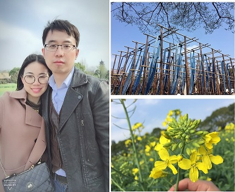

随记2018-02-02 09:38 我现在慢慢明白之前政治讲什么一个中心，几个基本点等等有什么作用了。当信息量越来越多不确定性越来越大的时候，“如何选择”或者“路线问题”所造成的影响力，在一个较长的时间轴上，会超越其他所有因素。而订下合理可行又充满潜力的主线之后，所有选择都围绕主线开展，才能慢慢形成合力。 因随波逐浪而做出的局部最优的选择，也许多年以后回头看正是歧路的开始。而有些道路在错失机会后，是没可能再踏上的。因为时机不再，路径也发生了天翻地覆的变化。 并不是条条大路通罗马，进不了风口的猪也只能回猪圈而已。 2018-02-28 19:56 性格形成习惯，习惯影响选择，选择决定命运。 认识自己，是每时每刻，是一生一世，都不能停止的事。 加油！和自己做朋友！ 2018-03-09 22:22 我总是这么赶! (╯°Д°)╯︵ ┻━┻ 2018-03-18 23:18 去小镇看了一次油菜花。  2018-03-28 12:56 其实都做得完，做得好的。 关键还是时间管理。 2018-03-30 00:13 这个月第二次来杭州了。 居然碰上了网上交了钱旅馆说已住满的情况——这是超卖吗？？ 气愤，还好附近就有available的。 2018-03-30 22:14 学生们：老师，是低度酒还是高度酒？ 我：低度酒...吧。 一会儿后。 学生们：买的武汉的低度酒，白云边，45度。 我：黑人问号？？？ 2018-04-02 23:31 穿着睡袍喝着酸奶听着老歌改着文章，也是一种乐趣啊。
2018-04-04 12:43 学校的网络又开始屎化了。 2018-04-04 20:46 把家里的绿植打翻了，把草都压死了，然后被领导教育了 。。。 (￣ε(#￣)☆╰╮o(￣皿￣///) 2018-04-05 20:31 身体健康永远超越一切处在优先级的最前列。 2018-04-06 07:43 守城的人，是逃不掉，也逃不了。 最后只能天天述说："I used to be an adventurer like you, then I took an arrow in the knee." 2018-04-18 14:32 智能存储，嗯。 不做守城人。 |